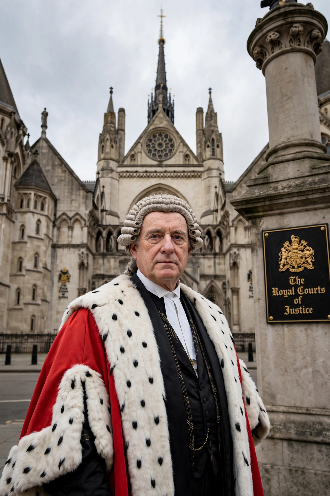

The Lord Chief Justice of England and Wales is the head of the judiciary of England and Wales and President of the Courts of England and Wales. Since the Constitutional Reform Act 2005, the holder leads the judiciary, represents its views to Parliament and government, and presides over important criminal appeals.

The office originated in the Chief Justiciar and the Chief Justice of the King's Bench in the 13th century. Formerly also President of the House of Lords in its judicial capacity, that role passed to the Supreme Court in 2009.
Notable holders include Lord Mansfield, Lord Denning (as Master of the Rolls, a separate role), Lord Woolf and Lord Judge. Sue Carr, Baroness Carr of Walton-on-the-Hill, became the first woman to hold the office in 2023, styled Lady Chief Justice.